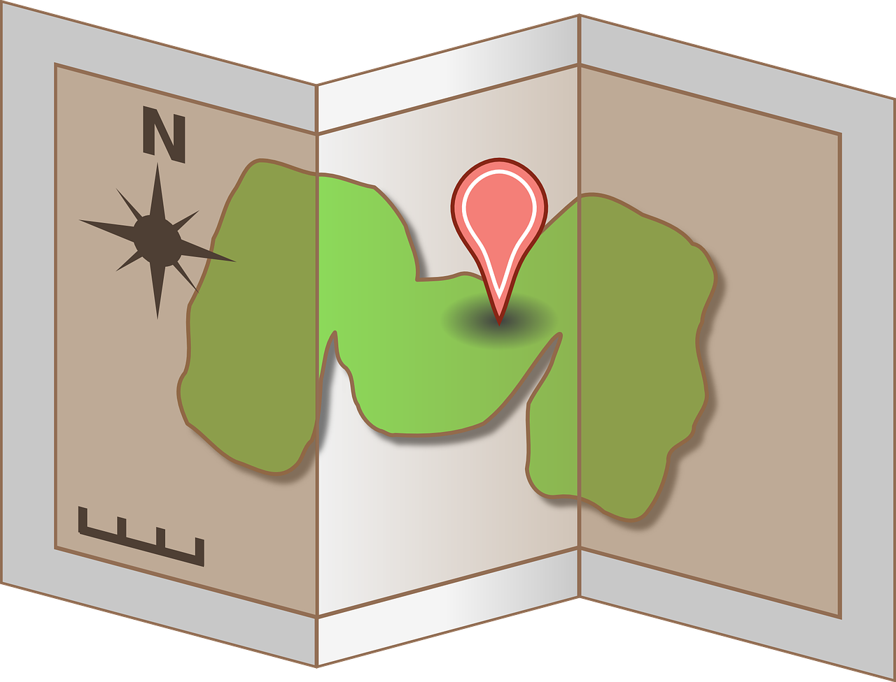

Découvrez comment localiser, partager et optimiser le compostage urbain grâce à notre plateforme interactive.
Accéder à la carte des composteursChaque année, des tonnes de déchets organiques finissent à la poubelle alors qu’ils pourraient être valorisés en compost.
TerraNova est là pour changer ça !
Une carte interactive pour trouver facilement un point de compostage proche.

Échangez des avis et participez à des événements de compostage.
Toutes les bonnes pratiques pour composter sans souci.
"Grâce à TerraNova, j’ai enfin trouvé un composteur près de chez moi et je peux échanger avec d’autres habitants !" – Marie
"Une initiative incroyable pour encourager le compostage en ville !" – Christophe